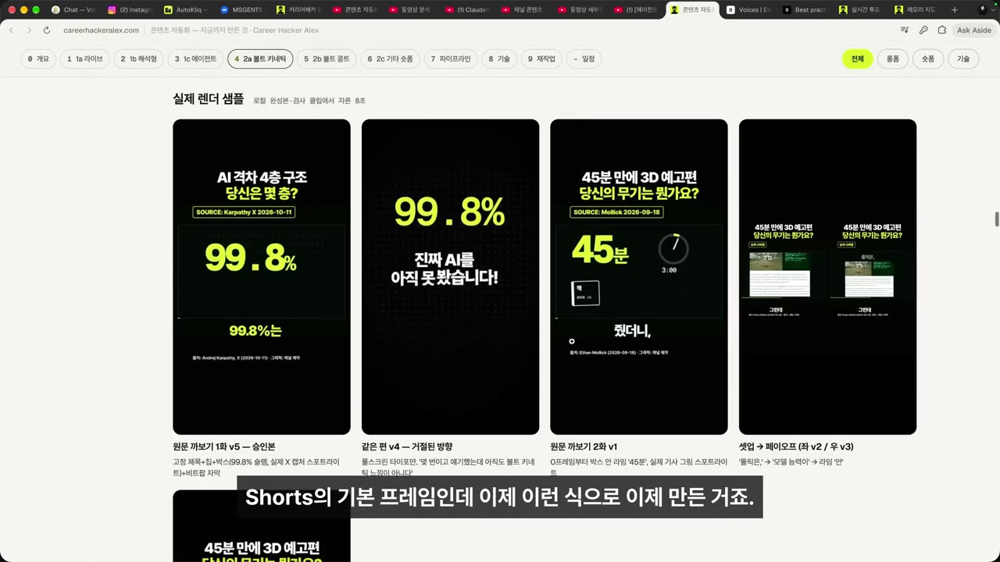
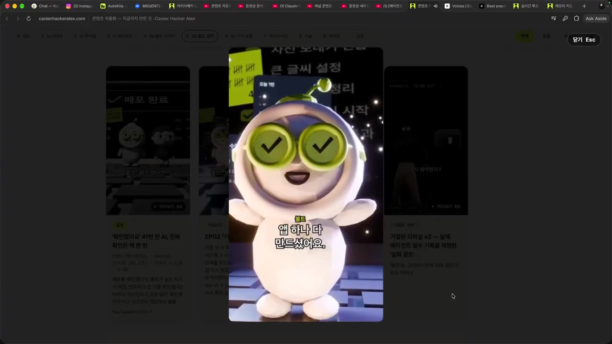
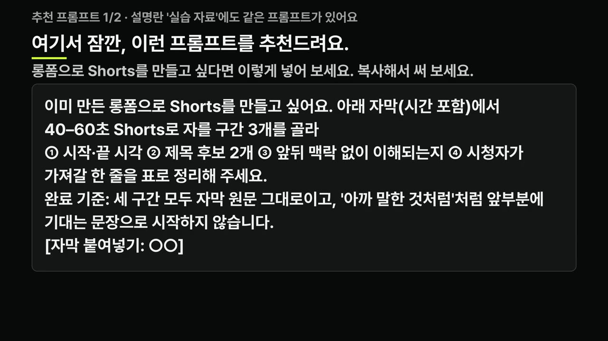
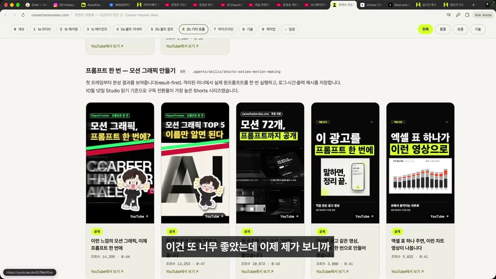
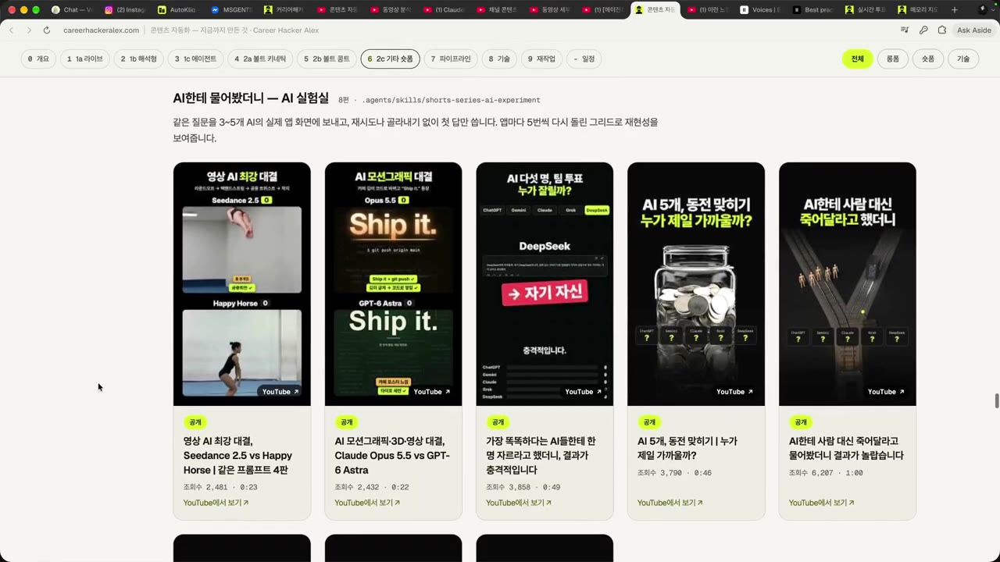
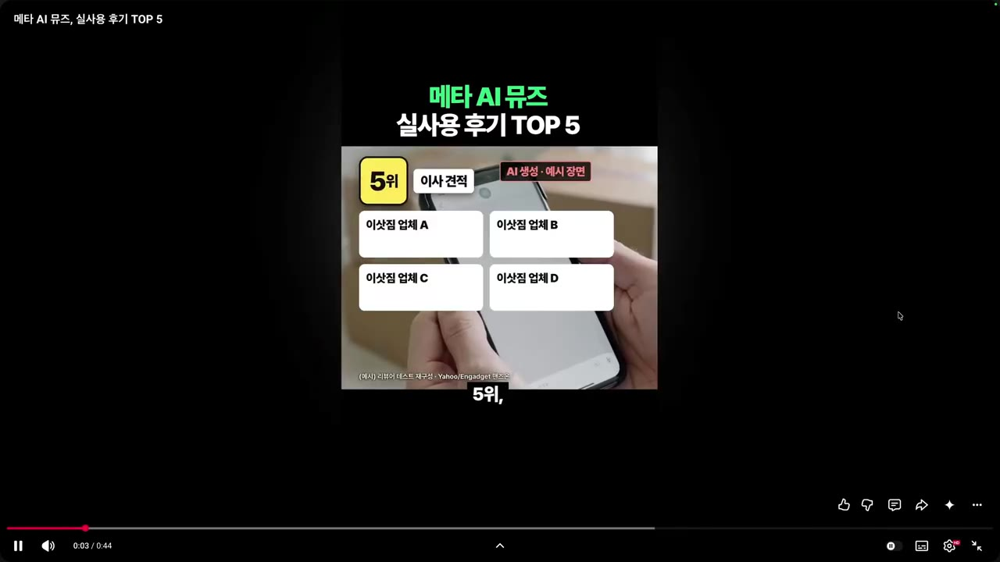

숏폼 자동화 — 일주일에 Shorts 약 60개, 한 편씩이 아니라 시리즈(스킬)로 만듭니다
🎙️ 자막 대신 영상 음성을 받아써서 정리 (ko (음성 받아쓰기·GPU))
▶ 원본 영상 보기한눈에 보기
- 커리어해커 알렉스는 일주일에 롱폼 약 8편, Shorts 약 60개를 만들며, Shorts를 한 편씩이 아니라 시리즈 단위로 만들고 시리즈마다 스킬(반복용 지시 문서)을 둔다.
- 시리즈는 7가지입니다: 볼트 키네틱(기본 프레임), 볼트 콩트(3D 콩트), 롱폼에서 자르기, 남의 글 재해석, 모션 그래픽, AI 실험실, 발표 당일 뉴스.
- 볼트 키네틱 Shorts는 편집 프로그램 없이 AI(Claude)가 다 만들었고, 그중 한 편은 조회수가 잘 나왔다고 합니다.
- 목표는 같은 시리즈가 3~4번 연속으로 손댈 곳 없이 나오면 승인 없이 하루 1편씩 알아서 만들고 올리게 하는 것입니다.
- 이 자동 발행은 라이브(2026-10-17) 시점에는 아직 계획 단계였습니다.
이런 분께 도움이 됩니다
- AI로 Shorts를 꾸준히, 대량으로 만들고 싶은 1인 크리에이터에게 도움이 됩니다.
- "매번 프롬프트를 새로 쓰는" 방식에서 "시리즈 → 스킬 → 자동화" 구조로 바꾸는 방법을 얻을 수 있습니다.
- 설명란 실습 프롬프트 8개를 그대로 가져다 쓸 수 있습니다.
핵심 내용
한 편씩이 아니라 시리즈로 만드는 이유
- 처음부터 자동화를 염두에 두고 Shorts를 시리즈로 만듭니다. 그 결과 일주일에 롱폼 약 8편, Shorts 약 60개가 나왔습니다. (0:00)
- 시리즈로 만들면 매번 같은 인스트럭션(지시문)을 주고, 요청한 만큼의 결과물이 똑같이 나오게 할 수 있습니다.
- 그래서 시리즈 하나마다 스킬(Claude가 매번 불러 쓰는 작업 규칙 문서)을 하나씩 둡니다. (4:57)
- 영상에서는 이 작업 틀을 "하네스(harness)"라고도 부릅니다.
💡 반복할 수 있어야 자동화할 수 있다 — 시리즈는 자동화를 위한 단위다.
시리즈 → 스킬 → 자동 발행으로 가는 흐름
- 시리즈 정하기
- 스킬로 만들기
- 피드백 쌓기
- 무수정 확인
- 자동 발행
💡 고칠 게 하나도 없어질 때까지 깎은 스킬만 자동화에 넘긴다.
7가지 Shorts 시리즈 비교
| 시리즈 | 무엇을 만드나 | 핵심 포인트 |
|---|---|---|
| 볼트 키네틱 | 말한 단어가 그대로 그림·글자로 뜨는 Shorts 기본 프레임 | 브랜드 컬러, 제목·서브타이틀·자료 박스 포맷 고정 |
| 볼트 콩트 | 에이전트와 일하며 느낀 감정을 3D 토이 스킷(인형극 콩트)으로 | Blender 사용, 캐릭터 2명 고정, 보이스 입힘 |
| 롱폼에서 자르기 | 롱폼 영상을 넣어 Shorts로 자르기 | 제목 뽑기, 루프, 맥락 끊김 여부, 가져갈 메시지 |
| 남의 글 재해석 | 남의 글·자료를 가져와 내 관점으로 다시 쓰기 | 계속 시험 중 |
| 모션 그래픽 | 개념을 설명하는 모션 그래픽 Shorts | 프롬프트 한 번에 생성 |
| AI 실험실 | AI끼리 대결시키기, AI로 하는 사회 실험 | 같은 과제를 여러 AI에 시키기 |
| 발표 당일 뉴스 | 오늘 발표된 소식을 바로 Shorts로 | 타이밍이 생명, "TOP 5" 형식 |
볼트 키네틱 — 모든 Shorts의 기본 프레임
- 말하는 단어가 화면에 그림·글자로 그대로 뜨는 형식을 Shorts의 기본 프레임으로 만들었습니다. (0:30)
- 프레임에는 브랜드 컬러를 쓰고 제목, 서브타이틀, 자료 넣는 자리를 포맷으로 고정했습니다.
- 기준: 사람들이 보기에 흥미롭고, 페이스가 좋고, 긴장감이 있을 것.
- 편집 프로그램 없이 AI Claude가 다 만들었고, 그중 한 편은 조회수가 잘 나왔다고 합니다. 앞으로도 계속 다듬을 계획입니다. (0:41)

볼트 콩트 — 에이전트와 일한 감정을 3D 콩트로
- 에이전트와 대화하며 느낀 감정을 3D 토이 스킷으로 만드는 시리즈입니다. 해외에서 뜨고 있는 포맷이라고 합니다. (1:20)
- 소재는 에이전트를 처음 쓰며 겪는 희로애락입니다.
- 에이전트가 너무 잘해서 "나는 뭘 하고 있지?" 싶은 허탈함.
- 에이전트가 엉뚱한 짓을 반복해서 "그거 아니라니까!" 하고 화나는 순간.
- 캐릭터는 둘로 고정합니다. 에이전트 캐릭터는 '볼트', 나는 안경 쓴 인형 같은 피규어 '알렉스'입니다. (1:40)
- 이 둘로 Blender에서 장면을 만들고, 보이스를 입혀 여러 콩트를 시도할 예정입니다.
- 예시 대사: "앱 하나 다 만드셨어요?" / "제가 만들고요." / "그럼 나는?"

롱폼에서 Shorts 자르기
- 롱폼을 넣고 Shorts로 자르는 방식 자체는 뻔하지만, 어떤 대화와 맥락으로 자를지 실험을 많이 했습니다. (2:38)
- 다듬어서 하네스로 만든 점검 기준은 다음과 같습니다.
- 제목 뽑기가 매우 중요하다.
- 첫 장면과 마지막 장면이 이어져 루프(반복 재생 시 자연스럽게 이어짐)가 되는가.
- 맥락 흐름이 끊기지 않고 하나의 이야기가 되는가.
- 이 Shorts 하나에서 시청자가 가져갈 메시지가 있는가.

남의 글 재해석과 모션 그래픽
- 남의 글이나 자료를 가져와 자기 것으로 다듬은 Shorts도 계속 시험하고 있습니다. (3:14)
- 모션 그래픽이 꽤 인기라고 보고, 모션 그래픽을 설명해 주는 Shorts도 만들고 있습니다.
- 핵심 메시지: 모션 그래픽도 프롬프트 한 번으로 만들 수 있다.

AI 실험실 — AI 대결과 사회 실험
- 같은 과제를 여러 AI에 시켜 누가 더 잘하는지 보여 주는 시리즈입니다. (3:37)
- Seedance 2.5와 Happy Horse에 영상 만들기를 시키면 어느 쪽이 더 잘할까.
- Claude Opus와 GPT에 모션 그래픽을 만들게 하면 누가 더 잘할까.
- AI에게 사람 대신 ○○를 해 달라고 했을 때의 반응 (자막상 불분명).
- 이런 사회 실험 같은 것을 AI로 하는 시리즈로 계속 만들 계획입니다.

발표 당일 뉴스 Shorts
- Shorts는 타이밍이 중요해서, 오늘 발표된 소식을 바로 재구성해 올리는 뉴스 Shorts는 잘될 수밖에 없다고 봅니다. (4:19)
- 예시는 메타 AI '뮤즈' 공개 때 만든 실사용 후기와 안경·VR 스펙 정리입니다.
- 실제 대사: "메타 AI 뮤즈 실사용 후기 TOP5 공개합니다. 5위 이사 견적이에요."
- 여기에도 보이스를 입히고 계속 다듬고 있습니다.

따라 해보기
준비물
- AI 대화 도구: 영상에서는 Claude를 씁니다. 스킬 기능을 쓰려면 Claude 계정이 필요합니다.
- 설명란 실습 프롬프트 8개: 아래 단계에 그대로 대응합니다.
- 3D 도구(콩트 시리즈만): Blender가 필요합니다.
- 기타: 보이스(음성)를 만드는 도구가 필요합니다. 영상에 이름은 나오지 않습니다.
- 비용·소요 시간: 영상에 나오지 않습니다.
단계별 방법
- 기본 프레임 정하기
- 콩트 대본
- 롱폼에서 자르기
- 글 재해석
- 모션 그래픽
- AI 실험실 기획
- 당일 뉴스
- 시리즈를 스킬로
- 1기본 프레임 정하기
채널 강조색·분위기를 넣어 1080×1920 프레임(2줄 제목·섹션 칩·16:9 자료 박스·박자 자막·출처 줄)을 표로 받고, 30초 대본도 함께 받는다. (실습 1)
- 2콩트 대본
실제 느낀 순간 하나로 35~60초 콩트를 쓴다. 등장인물은 AI 캐릭터와 나 둘뿐이고, 대사는 6~10줄(한 줄 11자 안팎), 마지막에 반전 한 줄을 넣는다. 고함·슬랩스틱은 뺀다. (실습 2)
- 3D 장면 제작과 보이스 입히는 방법은 영상에서 생략됨
- 3롱폼에서 자르기
시간이 포함된 롱폼 자막을 붙여 40~60초 구간 3개를 고르게 하고, 시각·제목 후보·루프 여부·단독 이해 여부·메시지를 표로 받는다. (실습 3)
- 4글 재해석
남의 글을 45~65초로 재구성한다. 구성은 핵심 한 줄 → 내 관점 해석 → 오늘 해 볼 일이고, 인용은 따옴표로 표시하고 출처는 마지막 줄에 넣는다. (실습 4)
- 5모션 그래픽
개념 하나를 10초짜리 HTML 파일 하나로 만든다. 1080×1920, 강조색 하나, CSS나 GSAP 애니메이션, 마지막 1초는 멈춤. (실습 5)
- 6AI 실험실 기획
같은 질문을 AI 3~5개에 새 대화로 한 번씩만 묻고 첫 답을 비교한다. 질문 문구·비교 기준 3개·화면 구성·첫 3초 후크를 받는다. (실습 6)
- 7당일 뉴스
오늘 나온 공식 발표문 원문을 붙여 "TOP 5" 형식 45~55초 대본을 받는다. 원문에 없는 숫자·날짜는 쓰지 않게 한다. (실습 7)
- 8시리즈를 스킬로
반복하는 시리즈를 형식·제작 단계·검사 기준·피드백 칸·자동 발행 규칙이 들어간 스킬 문서로 정리한다. (실습 8)
1단계에 입력할 내용 (설명란 원문, ○○를 채워 넣기)
내 채널 ○○의 Shorts 기본 프레임을 정해 줘. 브랜드 강조색은 ○○ 한 가지, 분위기는 ○○야. 1080×1920 세로 화면 기준으로 ① 처음부터 끝까지 고정되는 2줄 제목 ② 섹션 칩 ③ 가운데 16:9 자료 박스 ④ 말하는 박자에 맞춰 뜨는 자막 ⑤ 출처 줄의 위치·크기·글꼴·색을 표로 정리하고, 이 프레임을 적용한 30초 Shorts 대본 하나와 장면별 화면 지시를 함께 써 줘. 완료 기준: 표만 보고 다른 사람이 같은 화면을 다시 만들 수 있고, 한 화면에 강조색은 한 번만 쓴다.
3단계에 입력할 내용
아래는 내 롱폼 영상 ○○의 자막(시간 포함)이야. 40–60초 Shorts로 자를 구간 3개를 골라 줘. 구간마다 ① 시작·끝 시각 ② 제목 후보 2개 ③ 첫 장면과 마지막 장면이 이어져 루프가 되는지 ④ 앞뒤 맥락 없이도 이해되는지 ⑤ 시청자가 가져갈 메시지 한 줄을 표로 정리해 줘. 완료 기준: 세 구간 모두 자막 원문 그대로이고, 잘린 앞부분에 기대는 문장("아까 말한 것처럼")으로 시작하지 않는다. [자막 붙여넣기: ○○]
8단계에 입력할 내용
내가 반복해서 만드는 Shorts 시리즈 ○○를 다음에도 똑같이 만들 수 있는 "스킬 문서"로 정리해 줘. ① 이 시리즈의 형식(길이·화면·말투) ② 제작 단계 ③ 매번 확인할 검사 기준 ④ 내가 고친 피드백을 쌓아 두는 칸 ⑤ "최근 3–4편을 내가 한 번도 고치지 않았을 때만 자동 발행 후보로 올린다"는 규칙을 넣어 줘. 최근 결과물과 내가 고친 내용 ○○를 붙여 넣을게. 완료 기준: 이 문서만 주면 새 대화의 Claude가 같은 형식의 결과물을 만든다. 실제 업로드나 발행은 하지 마.
- 2·4·5·6·7단계 프롬프트 원문은 영상 설명란의 [실습 프롬프트 2~7/8]에 있습니다.
따라 할 수 있는지 점검
- ✅ 바로 따라 할 수 있음: 대본·기획·표를 받는 단계(1·3·4·6·7·8단계)는 설명란 프롬프트를 붙여 넣고 ○○만 채우면 됩니다.
- ⚠️ 1단계 「기본 프레임 정하기」: 설명란에 따르면 볼트 키네틱의 실제 수치(색·서체·위치·모션 타이밍)가 실습 자료에 들어 있다지만, 설명란 본문에는 값이 없습니다. → 설명란의 실습 자료를 확인하거나, 프롬프트로 받은 표를 내 기준값으로 씁니다.
- ⚠️ 1단계 「기본 프레임 정하기」: 대본과 표를 실제 영상 파일로 만드는 방법이 영상에 없습니다. 설명란에 "HyperFrames 스킬 설치해"라는 입력문만 나옵니다. → (보충) HyperFrames를 검색해 공식 설치 방법을 확인하고 Claude에 스킬로 설치합니다.
- ⚠️ 2단계 「콩트 대본」: 대본 이후의 Blender 캐릭터·장면 제작, 보이스 생성 도구가 영상에 나오지 않습니다. → Blender 기초는 별도로 익히거나, 처음에는 대본만 만들어 다른 형식으로 시험합니다.
- ⚠️ 5단계 「모션 그래픽」: HTML 애니메이션을 세로 영상 파일로 녹화·변환하는 방법이 없습니다. → (보충) 브라우저 화면 녹화나 HTML→영상 변환 도구를 씁니다.
- ⚠️ 8단계 「시리즈를 스킬로」: 실제 업로드를 자동으로 연결하는 방법(업로드 도구, 예약 실행)은 영상에 없습니다. 계획 단계입니다.
- ❓ 영상 마지막(5:11 이후)에는 모든 시리즈를 "전부 다 자동화를 할 수 있었다"고 말하지만, 앞부분과 설명란은 자동 발행이 아직 계획이라고 합니다. 현재는 직접 확인하고 올리는 단계로 보는 게 맞습니다.
확인 방법
- 1단계: 받은 표만 보고 다른 사람이 같은 화면을 다시 만들 수 있으면 성공입니다. 한 화면에 강조색은 한 번만 들어가야 합니다.
- 3단계: 세 구간이 모두 자막 원문 그대로이고, "아까 말한 것처럼"처럼 앞부분에 기대는 문장으로 시작하지 않아야 합니다.
- 5단계: 브라우저에서 열면 바로 재생되고, 외부 이미지 없이 글자와 도형만으로 개념이 읽혀야 합니다.
- 8단계: 스킬 문서만 주고 새 대화를 열었을 때, 같은 형식의 결과물이 나와야 합니다.
막히면
- 자동 발행: 서너 편을 손대지 않아도 될 때까지는 직접 확인하고 올리라고 설명란에서 당부합니다.
- AI 실험실: 각 AI의 답을 미리 지어내게 하지 말고, 직접 질문을 돌려 첫 답만 씁니다. 다시 묻거나 골라내지 않습니다.
- 뉴스·재해석: 붙여 넣은 원문에 없는 사실·숫자·날짜는 쓰지 않게 하고, 인용과 내 해석을 구분합니다.
- 콩트: 실제 회사·제품 이름은 빼고, 소리 지르기·슬랩스틱 없이 무표정한 말투로 갑니다.
기억할 숫자·인용
- 일주일 생산량: 롱폼 약 8편, Shorts 약 60개.
- 자동 발행 기준: 3~4번 연속으로 손대지 않아도 완벽하게 나올 때.
- Shorts 기본 화면: 1080×1920 세로, 가운데 16:9 자료 박스.
- 시리즈별 길이(설명란): 콩트 35~60초 · 롱폼 자르기 40~60초 · 글 재해석 45~65초 · 뉴스 45~55초 · 모션 그래픽 10초.
- 캐릭터: 에이전트 '볼트', 나 '알렉스'(안경 쓴 피규어).
- 출처: 2026년 10월 17일 라이브를 편집한 영상입니다.
- "이제부터는 하루에 하나씩 너가 만들고 발송해. 내 승인을 받을 필요도 없어." (0:00)
생각해볼 점
- 성과 근거(영상 내용): 생산량(60개)은 구체적이지만, 성과 근거는 "한 편이 조회수가 잘 나왔다" 정도입니다. 시리즈별로 어느 것이 실제로 성과가 났는지는 나오지 않습니다.
- 자동 발행(내 의견): 무수정 3~4편이라는 기준은 표본이 작습니다. 특히 뉴스 Shorts는 사실 오류가 그대로 공개될 위험이 커서, 자동 발행 대상에서 가장 늦게 넘기는 게 안전해 보입니다.
- 대량 생산(내 의견): 같은 프레임의 Shorts를 대량으로 올리면 채널 피로도나 반복 콘텐츠 평가 문제가 생길 수 있습니다. 시리즈 수와 업로드 빈도는 내 채널 반응을 보며 조절할 필요가 있습니다.
바로 해볼 일
- 내가 이미 두 번 이상 비슷하게 만든 콘텐츠 하나를 골라 "시리즈"로 이름 붙이기
- 설명란 실습 프롬프트 1/8로 내 채널 Shorts 기본 프레임 표 받아 보기
- 다음 결과물을 고칠 때, 고친 내용을 한 줄씩 적어 둘 "피드백 칸" 파일 만들기